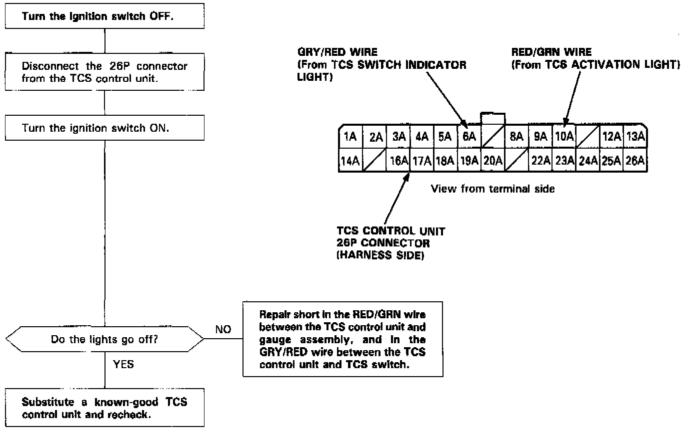

Operation CHARM
: Car repair manuals for everyone.
Home
>>
Acura
>>
1994
>>
Legend Coupe V6-3206cc 3.2L SOHC FI
>>
Repair and Diagnosis
>>
Brakes and Traction Control
>>
Antilock Brakes / Traction Control Systems
>>
Testing and Inspection
>>
Symptom Related Diagnostic Procedures
>>
TCS Switch and Activation Lights Do Not Go Off
TCS Switch and Activation Lights Do Not Go Off

The TCS switch indicator light and the TCS activation light do not go off two seconds after the ignition switch is turned on.